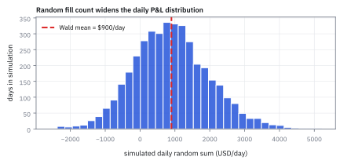
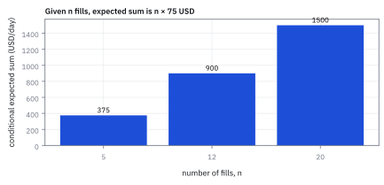
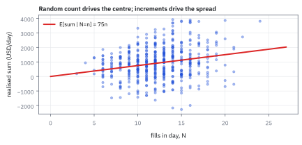
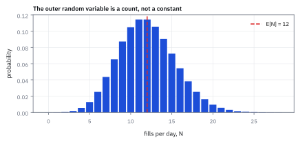

2.3 Random Sums and Wald's Identity
เมื่อจำนวนรายการเทรดไม่แน่นอน ยังหา expected P&L รวมของวันได้อย่างไร
ตู้ขายขนมมีลูกค้าเฉลี่ย 12 คนต่อวัน และแต่ละคนซื้อเฉลี่ย \$3 ยอดขายเฉลี่ยควรเป็น \$36 ใช่ไหม?
เฉลย: ใช่ ถ้าจำนวนลูกค้าไม่เปลี่ยนยอดซื้อต่อคน แต่ถ้าวันที่คนแน่นขนมหมดเร็ว ลูกค้าคนหลัง ๆ ซื้อไม่ได้ ยอดต่อคนในวันแน่นจะต่ำลง และยอดเฉลี่ยจริงจะต่ำกว่า \$36 ขั้นที่ 1 จะนับให้เห็นด้วยตัวเลขว่าคูณค่าเฉลี่ยได้เมื่อไรและไม่ได้เมื่อไร
Random sum คือผลรวมที่จำนวนพจน์ยังสุ่มอยู่ และ Wald's Identity บอกว่า expected total เท่ากับ expected count คูณ expected amount ต่อครั้ง เมื่อสองส่วนเป็นอิสระ ใช้คาดยอดรวมหรือปริมาณงานจากค่าเฉลี่ยสองตัว
ศัพท์ที่ใช้ในหัวข้อนี้
- random sum
- ผลรวมที่จำนวนพจน์เป็น random variable จึงเปลี่ยนได้ในแต่ละวัน ใช้หายอดรวมเมื่อยังไม่รู้ว่าจะมีรายการกี่ครั้ง
- random variable
- random variable คือปริมาณที่ยังไม่รู้ค่าจนกว่าจะเห็นผลลัพธ์ เช่น จำนวนคำสั่งซื้อขายในหนึ่งวัน ใช้แทนจำนวนที่เปลี่ยนไปตามโอกาส
- Wald's Identity
- ทฤษฎีบททางสถิติที่ระบุว่า ค่าเฉลี่ยของผลรวมแบบสุ่ม เท่ากับค่าเฉลี่ยของจำนวนพจน์คูณด้วยค่าเฉลี่ยของแต่ละพจน์
- iid (independent and identically distributed)
- คุณสมบัติที่แต่ละรายการเป็นอิสระต่อกันและมาจาก distribution เดียวกัน ทำให้ค่าเฉลี่ยต่อครั้งคงที่
- independence
- independence หมายถึงการรู้ค่าตัวแปรหนึ่งไม่เปลี่ยน distribution ของอีกตัว ใช้ตรวจว่าเราคูณ expected count กับ expected amount ได้หรือไม่
- increment
- มูลค่าที่เพิ่มขึ้นในแต่ละขั้น หรือผลกำไรสุทธิจากการซื้อขายแต่ละรายการที่จะนำมาบวกกัน
- fill
- การที่คำสั่งซื้อขายได้รับการจับคู่สำเร็จในตลาด ใช้เป็นหน่วยนับจำนวนครั้งที่การซื้อขายเกิดขึ้นจริง
- slippage
- ต้นทุนแฝงจากส่วนต่างระหว่างราคาที่คาดไว้กับราคาที่จับคู่ได้จริง ใช้วัดว่าการส่งคำสั่งทำให้ราคา execution แย่ลงเท่าไร
- Poisson distribution
- Poisson distribution ใช้นับจำนวนเหตุการณ์ที่เกิดสุ่มตามเวลา เช่น จำนวนครั้งที่คำสั่งได้รับการจับคู่ในหนึ่งวัน
- Monte Carlo simulation
- การจำลองสถานการณ์สุ่มซ้ำ ๆ ในคอมพิวเตอร์หลายพันรอบ เพื่อตรวจยืนยันความถูกต้องของสูตรคณิตศาสตร์
- look-ahead bias
- bias ที่เกิดจากการแอบนำข้อมูลอนาคตมาใช้พยากรณ์อดีต ใช้ตรวจว่า backtest แอบรู้คำตอบก่อนเวลาหรือไม่
- compound Poisson
- ผลรวมสุ่มที่จำนวนพจน์เป็น Poisson เช่นจำนวนเคลมคูณขนาดเคลม ใช้จำลองความเสียหายรวมในงานประกันและความเสี่ยงด้านปฏิบัติการ
- Basel
- ชุดเกณฑ์กำกับธนาคารระหว่างประเทศ ใช้กำหนดว่าธนาคารต้องกันทุนสำหรับความเสี่ยงแต่ละแบบเท่าไร
- stopping time
- stopping time คือเงื่อนไขบอกจังหวะหยุดที่ตัดสินใจจากข้อมูลย้อนหลังจนถึงปัจจุบันเท่านั้น ใช้กำหนดจุดเลิกเทรดเมื่อแตะระดับขาดทุนหรือได้กำไรตามเป้า
สัญลักษณ์ที่ใช้ในหัวข้อนี้
| สัญลักษณ์ | ความหมาย | หน่วย |
|---|---|---|
| $N$ | จำนวนครั้งที่คำสั่งจับคู่สำเร็จ (fills) ในหนึ่งวัน | fills/day, integer ที่ไม่ติดลบ |
| $X_i$ | increment หรือกำไรสุทธิ (net P&L) ของการจับคู่ครั้งที่ $i$ | USD/fill |
| $S_N$ | กำไรรวมของทั้งวันจากการจับคู่ทั้งหมด $N$ ครั้ง | USD/day |
| $\mu$ | expected P&L ต่อการจับคู่หนึ่งครั้ง หรือ $E[X_i]$ | USD/fill |
| $E[N]$ | expected value ของจำนวน fills ต่อวัน | fills/day |
| $i$ | ดัชนีลำดับของการจับคู่คำสั่ง | ไม่มีหน่วย |
| $n$ | จำนวนครั้งที่กำหนดขึ้นเพื่อลองดูเงื่อนไข $N=n$ | fills, integer ที่ไม่ติดลบ |
| $\sigma_X$ | standard deviation ของกำไรต่อการจับคู่หนึ่งครั้ง (สมมติ \$150) | USD/fill |
| $I_i$ | ตัวนับของไม้ที่ $i$ เป็น 1 ถ้าวันนั้นได้เทรดถึงไม้ที่ $i$ และเป็น 0 ถ้าหยุดก่อน | — |
ที่มาที่ไป: Abraham Wald กับการตรวจกระสุนในสงคราม
ช่วงปี 1943 ถึง 1945 Abraham Wald ทำงานสถิติให้กองทัพสหรัฐที่มหาวิทยาลัย Columbia การตรวจแบบเดิมต้องยิงทดสอบครบจำนวนที่กำหนดไว้ก่อน แม้ผลจะชัดตั้งแต่นัดแรก ๆ เขาเสนอให้ตรวจทีละชิ้นแล้วหยุดเมื่อข้อมูลพอ จำนวนชิ้นที่ตรวจจึงกลายเป็นตัวเลขสุ่ม
วิธีนี้ลดจำนวนที่ต้องตรวจได้ราวครึ่งหนึ่ง และถูกเก็บเป็นความลับจนสงครามจบ เพื่อคิดต้นทุนเฉลี่ยของการตรวจ Wald ต้องหาค่าเฉลี่ยของผลรวมที่จำนวนพจน์สุ่ม ซึ่งคือปัญหาเดียวกับโต๊ะเทรดทุกวัน เพราะไม่มีใครรู้ล่วงหน้าว่าวันนี้จะได้เทรดกี่ไม้
ตั้งโจทย์: เมื่อจำนวนครั้งที่ซื้อขายเป็น random variable
กำหนดให้ $N$ เป็น random variable ที่นับจำนวนรายการซึ่งจับคู่สำเร็จในแต่ละวัน หรือจำนวน fills
ให้ $X_i$ คือกำไรสุทธิ (net P&L) ของการจับคู่ครั้งที่ $i$ หลังหักค่าธรรมเนียมและต้นทุน
สมมติว่ากำไรแต่ละรายการเป็น random variable แบบ iid และมี independence จากจำนวนรายการทั้งหมด ระบบมี fills เฉลี่ย 12 ครั้งต่อวัน และกำไรเฉลี่ย \$75 ต่อรายการ
ขั้นที่ 1 — สามวันด้วยมือ: ตอนไหนคูณค่าเฉลี่ยได้ ตอนไหนไม่ได้
ก่อนพิสูจน์อะไร ลองสามวันด้วยมือ ครั้งแรกให้กำไรต่อไม้เท่ากันทุกวัน ครั้งที่สองให้วันยุ่งกำไรต่อไม้ลด แล้วดูว่าสูตร “คูณค่าเฉลี่ย” รอดตอนไหน
ตัวอย่างแรกกำไรต่อไม้คงที่ 75 จึงคูณค่าเฉลี่ยจำนวนไม้ 12 ได้ 900 ตรงกับการนับ
ตัวอย่างที่สองเปลี่ยนกำไรต่อไม้ของวันที่ 14 ไม้เป็น 50 ถ้าเฉลี่ยกำไรต่อไม้แบบให้น้ำหนักแต่ละวันเท่ากัน จะได้ 66.67 คูณ 12 ได้ 800 ซึ่งยังไม่ตรงกับยอดเฉลี่ยจริง 783.33 เพราะวันที่ไม้มากกลับได้กำไรต่อไม้น้อย สองตัวแปรจึงพึ่งกัน การใช้ 75 เดิมให้ 900 ยิ่งผิดเพราะไม่ได้ปรับค่าเฉลี่ยตามโจทย์ใหม่ด้วย
ขั้นที่ 2 — นิยาม random sum ของ daily P&L
ความยากของโจทย์นี้คือทั้งจำนวนรายการและกำไรต่อรายการต่างก็สุ่มทั้งคู่ ต้องเขียนให้ชัดก่อนว่าอะไรสุ่มอย่างไร
$S_N$ คือผลรวมกำไรของรายการที่ 1 ถึง $N$; จุดสำคัญคือขอบบน $N$ เป็น random variable จึงทำให้ผลรวมนี้เป็น random sum ในหน่วย USD ต่อวัน
ขั้นที่ 3 — คำนวณ conditional expectation เมื่อรู้จำนวน fills
ใช้กลเม็ดเดิม คือสมมติไปก่อนว่ารู้จำนวนรายการแล้ว ปัญหาจะง่ายลงทันที
สองบรรทัดแรกใช้เงื่อนไข $N=n$ และแยกค่าเฉลี่ยของผลบวก แต่บรรทัดสามต้องมีเหตุผลเพิ่ม: ที่นี่สมมติ $N$ เป็นอิสระจากลำดับ $X_i$ ทั้งชุด และแต่ละ $X_i$ มีค่าเฉลี่ยจำกัดเดียวกัน $\mu$ การรู้ $N$ จึงไม่เปลี่ยนค่าเฉลี่ยต่อไม้ ไม่ใช่ลบเงื่อนไขออกได้เพียงเพราะรู้จำนวนแล้ว
ขั้นที่ 4 — ปลดล็อกด้วย Tower Property
ตรึงจำนวนไม้ก่อนแล้วค่อยปลด เป็นวิธีเดียวกับที่หัวข้อ 2.1 ใช้ หกบรรทัดนี้แสดงว่าการคูณค่าเฉลี่ยสองตัวเข้าด้วยกันไม่ใช่การเดา มันเป็นผลของการเฉลี่ยสองชั้น
กลเม็ดคือตรึงจำนวนไม้ไว้ก่อน แล้วค่อยปลด พอตรึงไว้ที่ $n$ ทุกอย่างง่ายทันที ใช้กฎบวกค่าเฉลี่ยจากหัวข้อ 1.3 ไม้ทุกไม้มีค่าเฉลี่ยเท่ากันคือ $\mu$ บวก $n$ ครั้งได้ $n\mu$ แล้วบรรทัดสองปลดการตรึง เขียนผลเดิมโดยให้ $n$ กลับเป็น $N$ ที่ยังสุ่มได้
จากนั้นใช้ Tower Property จากหัวข้อ 2.1 เฉลี่ยทับอีกชั้น $\mu$ เป็นเลขคงที่จึงดึงออกนอกค่าเฉลี่ยได้ เหลือคำตอบว่าค่าเฉลี่ยของยอดรวม คือจำนวนไม้เฉลี่ยคูณกำไรเฉลี่ยต่อไม้ การคูณสองค่าเฉลี่ยจึงไม่ใช่การเดา มันเป็นผลของการเฉลี่ยสองชั้น
ขั้นที่ 5 — คำนวณตัวเลขจริงด้วย Wald's Identity
ผลที่ได้สวยมากและจำง่าย คือคูณกันสองตัวตรง ๆ แต่ต้องระวังว่ามันใช้ได้เมื่อไร
แทนค่าตัวเลขจริง: จำนวนเทรดเฉลี่ย 12 fills ต่อวัน คูณกับกำไรเฉลี่ย \$75 ต่อ fill ได้ผลลัพธ์กำไรเฉลี่ยรวม \$900 ต่อวัน โดยหน่วย fills ตัดกันอย่างสมบูรณ์เหลือหน่วย USD ต่อวัน
ขั้นที่ 6 — เส้นทางที่สองด้วย indicator: ทำไมสูตรนี้จึงใช้ได้กับ stopping time
วิธีเดิมในขั้นก่อนหน้าต้องสมมติว่ารู้จำนวนไม้ $n$ ล่วงหน้า แต่ในการเทรดจริง เรามักหยุดเมื่อแตะระดับขาดทุน นั่นคือ $N$ เป็น stopping time ที่ขึ้นกับอดีต การพิสูจน์ด้วย indicator จะแสดงว่าสูตรยังคงจริง
เขียนผลรวมใหม่ด้วยตัวนับ $I_i$ ซึ่งเป็น 1 ถ้าวันนั้นได้เทรดถึงไม้ที่ $i$ และเป็น 0 ถ้าหยุดไปก่อน ไม้ที่ไม่ได้เทรดจึงถูกคูณศูนย์ ขอบบนที่เคยสุ่มกลายเป็นผลรวมยาวไม่รู้จบที่ขอบแน่นอน
จังหวะสำคัญคือการแยกค่าเฉลี่ยของผลคูณ การตัดสินว่าจะเทรดไม้ที่ $i$ หรือไม่ ใช้ได้แค่ผลของไม้ที่ 1 ถึง $i-1$ ที่เห็นแล้ว จึงไม่เกี่ยวกับกำไรของไม้ที่ $i$ ซึ่งยังไม่เกิด ค่าเฉลี่ยของผลคูณจึงแยกเป็นผลคูณของค่าเฉลี่ยได้
ผลรวมของความน่าจะเป็นที่เหลือ $\sum_{i=1}^{\infty} P(N \ge i)$ คือการนับหาง เมื่อสลับลำดับการบวกจะได้ $\sum_{n=1}^{\infty} n P(N=n)$ ซึ่งตรงกับนิยามของ $\mathbb{E}[N]$ พอดี สูตรจึงไม่พังแม้มีเงื่อนไขการหยุด
ขั้นที่ 7 — ถอดรหัส conditional variance: ที่มาของพจน์ $N\sigma_X^2$
ก่อนจะหาความเสี่ยงรวมของวัน ต้องตอบให้ได้ก่อนว่าถ้าวันนี้มีคำสั่งจับคู่พอดี $n$ รายการ ความผันผวนของยอดสะสมจะเป็นเท่าใด
เมื่อล็อกจำนวนไม้ไว้ที่ $n$ ยอดรวมจะกลายเป็นผลบวกธรรมดา เรากระจาย variance ของผลบวกออกมาเป็นผลรวม variance แต่ละไม้บวกกับ covariance ของทุกคู่รายการ
เพราะกำไรแต่ละไม้เป็น iid และมี independence จาก $N$ ค่า covariance ของทุกคู่จึงดับเป็นศูนย์ เหลือเพียงการบวก $\sigma_X^2$ ซ้ำกัน $n$ ครั้ง ได้ผลลัพธ์เป็น $n\sigma_X^2$
เมื่อปลดการล็อก $n$ ให้กลับมาเป็น random variable ผลลัพธ์จึงกลายสภาพเป็น $N\sigma_X^2$ พร้อมที่จะนำไปเข้าสูตร Law of Total Variance ในขั้นถัดไป
ขั้นที่ 8 — ความผันผวนของยอดรวม: ใช้ Law of Total Variance จากหัวข้อ 2.2
ค่าเฉลี่ย 900 ยังไม่พอตัดสินใจ ต้องรู้ว่าวันจริงเหวี่ยงจาก 900 แค่ไหน สมมติเพิ่มว่ากำไรต่อไม้มี standard deviation \$150 แล้วใช้กฎแยกความเสี่ยงสองก้อนที่เพิ่งเรียน
ก้อนแรก: เมื่อรู้ว่ามี $n$ ไม้ variance ของผลรวมคือ $n\sigma_X^2$ (ไม้ independent จากหัวข้อ 1.4) เฉลี่ยทับด้วย $N$ ได้ $\mathbb{E}[N]\sigma_X^2$
ก้อนที่สอง: ค่าเฉลี่ยเมื่อรู้ $N$ คือ $N\mu$ ซึ่งเหวี่ยงเพราะ $N$ เหวี่ยง variance ของมันคือ $\mu^2\mathrm{Var}(N)$ สำหรับ Poisson variance เท่ากับค่าเฉลี่ย 12 (หัวข้อ 1.6)
แปลว่าอะไร: ยอดรวมต่อวันเฉลี่ย 900 แต่เหวี่ยง ±581 ก้อนใหญ่ (270,000) มาจากกำไรต่อไม้ที่เหวี่ยง ก้อนเล็ก (67,500) มาจากจำนวนไม้ที่ไม่แน่นอน ตารางข้อจำกัดข้างล่างเคยบอกว่า “ต้องคำนวณเพิ่ม” นี่คือการคำนวณนั้น
สูตร variance นี้ใช้สมมติฐานเพิ่มว่า $X_i$ เป็นอิสระต่อกัน มี variance จำกัดเดียวกัน และ $N$ เป็นอิสระจากทั้งลำดับ มีค่าเฉลี่ยและ variance จำกัด
สำหรับ stopping time ที่เลือกจากผลลัพธ์ที่ผ่านมา สูตรค่าเฉลี่ยของ Wald อาจยังจริงภายใต้เงื่อนไขอื่น แต่สูตร conditional mean และ variance ที่พิสูจน์ที่นี่ไม่ตามมาโดยอัตโนมัติ
ขั้นที่ 9 — แยกส่วนความเสี่ยงสองมิติ: กำไรต่อไม้ปะทะจำนวนไม้
การแตกความเสี่ยงออกเป็นสองก้อนทำให้เห็นภาพชัดเจนว่า ความผันผวนของ daily P&L มาจากฝีมือการจับคู่ราคาหรือมาจากจังหวะเวลาของตลาด
ก้อนแรกคือ trade risk เกิดจากความไม่แน่นอนของกำไรแต่ละไม้ มีสัดส่วนถึง 80% ของ variance รวม สะท้อนว่าความเสี่ยงหลักของกลยุทธ์นี้อยู่ที่ผลลัพธ์ของการเทรดแต่ละครั้ง
ก้อนที่สองคือ timing risk เกิดจากความไม่แน่นอนของจำนวนไม้ที่จับคู่ได้ มีสัดส่วน 20% สังเกตว่าหากกลยุทธ์ไม่มี edge ทางกำไร นั่นคือ $\mu = 0$ ก้อนนี้จะหายไปกลายเป็นศูนย์ทันที
เมื่อรวมสองก้อนเข้าด้วยกัน จะได้ standard deviation เท่ากับ \$580.95 ต่อวัน ซึ่งทำให้เทรดเดอร์ประเมินกรอบความผันผวนของบัญชีเพื่อวางแผนบริหารความเสี่ยงได้อย่างแม่นยำ
แล้วเอาไปใช้ทำอะไรได้จริงบ้าง
การรวมผลลัพธ์เมื่อจำนวนรายการก็สุ่มด้วย เป็นสถานการณ์จริงของโต๊ะเทรดแทบทุกวัน
ใช้ประมาณกำไรขาดทุนรวมของวัน เมื่อทั้งจำนวนไม้ที่จะได้เทรดและกำไรต่อไม้ต่างก็ไม่แน่นอน
ใช้ในงานประกันภัยและเครดิต เพื่อหาความเสียหายรวม เมื่อทั้งจำนวนเคลมและขนาดเคลมสุ่มทั้งคู่
ใช้วางแผนสภาพคล่อง เพราะบอกได้ว่าเงินที่ต้องเตรียมสำรองควรเป็นเท่าไรโดยเฉลี่ย โครงสร้างจำนวนสุ่มคูณผลสุ่มต่อหน่วยนี้เรียกรวมว่า compound Poisson เมื่อจำนวนเป็น Poisson และเป็นแกนของแบบจำลองความเสี่ยงด้านปฏิบัติการตามเกณฑ์ Basel
Figure 2.3a — การกระจายของ daily random sum จาก simulation

histogram จากการจำลอง 4,000 วัน แสดงให้เห็นว่า แม้กำไรเฉลี่ยต่อครั้งจะคงที่ แต่ความไม่แน่นอนของจำนวนครั้ง $N$ ส่งผลให้ผลกำไรรวมรายวันกระจายตัวเป็นวงกว้าง โดยมีจุดศูนย์กลางเกาะกลุ่มรอบ \$900 ต่อวันตามสูตร Wald's Identity
Figure 2.3b — ผลตอบแทนคาดหวังแปรผันตรงตามจำนวนรายการ

เมื่อกำไรเฉลี่ยต่อ fill คงที่อยู่ที่ \$75 ค่าเฉลี่ยของผลกำไรรวมจะเพิ่มขึ้นเป็นเส้นตรงตามจำนวนครั้งที่จับคู่ได้ ($n=5, 12, 20$) Wald's Identity ไม่ได้คาดเดาว่าพรุ่งนี้จะได้เทรดกี่ครั้ง แต่เฉลี่ยความเป็นไปได้ทั้งหมดออกมาเป็นตัวเลขเดียว
Figure 2.3c — daily variance เทียบกับจำนวนรายการจริง

จุดกราฟแสดงผลกำไรที่เกิดขึ้นจริงในแต่ละวัน: เส้นตรงสีแดงคือค่าเฉลี่ยตามเงื่อนไข ($75n$) ส่วนการกระจายตัวในแนวตั้งรอบเส้นเกิดจากความผันผวนของกำไรในแต่ละ trade ยิ่งเทรดหลายครั้ง ช่วงของการกระจายตัวยิ่งกว้างขึ้น
Figure 2.3d — Poisson distribution ของ random count

จำนวนรายการต่อวันมี Poisson distribution และ mean 12 ครั้ง กราฟเตือนว่า 12 เป็นค่าเฉลี่ยระยะยาว ไม่ใช่จำนวนตายตัวที่เกิดทุกวัน วันที่ได้ 8 หรือ 16 ไม้เกิดได้บ่อย
Worked Example — โจทย์จิ๋วที่คำนวณได้
โจทย์ให้อะไรมาบ้าง: จำนวน fills เฉลี่ย 12 ครั้งต่อวัน และกำไรเฉลี่ย \$75 ต่อ fill โดยเงื่อนไขของ Wald ใช้ได้
คำตอบ: expected daily P&L คือ $12\times75=900$ USD/day.
ตรวจเองใน 10 วินาที: กด 12*75 ต้องได้ 900 และหน่วย fills ตัดกันเหลือ USD/day
แปลว่าอะไร: ใช้เป็น benchmark ให้ Monte Carlo หรือ production report กับดักคือคูณค่าเฉลี่ยเมื่อจำนวน fills เลือกหยุดตามกำไรของไม้เองจนเงื่อนไขไม่ใช้
Worked Example 2.3 — กำไรรายเดือนเมื่อจำนวนสัญญาณก็สุ่ม
โจทย์ให้อะไรมาบ้าง: desk ยิงคำสั่งตามสัญญาณ จำนวนสัญญาณต่อเดือนเป็น Poisson ที่มีค่าเฉลี่ย 40 กำไรต่อไม้เฉลี่ย \$1,800 และเหวี่ยง \$9,000 ต่อไม้ ตรวจสี่เงื่อนไขก่อนใช้สูตร: ไม้ไม่เกี่ยวกัน ทุกไม้มาจากรูปแบบเดียวกัน จำนวนสัญญาณไม่เกี่ยวกับผลของไม้ และค่าเฉลี่ยกับ variance ของจำนวนมีค่าจำกัด ครบทั้งสี่ข้อ
คำตอบ: ค่าเฉลี่ยคือ 40 คูณ \$1,800 ได้ \$72,000 ต่อเดือน variance คือ \$1,800 คูณตัวเองคูณ 40 ได้ 129.6 ล้าน บวก \$9,000 คูณตัวเองคูณ 40 ได้ 3,240 ล้าน รวม 3,369.6 ล้าน ถอดรากได้ราว \$58,048 ต่อเดือน
ตรวจเองใน 10 วินาที: ส่วนที่มาจากจำนวนสัญญาณที่ไม่แน่นอนคือ 129.6 หาร 3,369.6 ได้แค่ 3.85% Sharpe รายเดือนคือ 72,000 หาร 58,048 ได้ 1.24 คูณราก 12 ได้ราว 4.3 ต่อปี
แปลว่าอะไร: ความเสี่ยงเกือบทั้งหมดมาจากผลของแต่ละไม้ที่เหวี่ยงถึงห้าเท่าของ edge ไม่ใช่จากการไม่รู้ว่าจะได้เทรดกี่ไม้ กับดักคือคิดว่าการได้สัญญาณสม่ำเสมอขึ้นจะลดความเสี่ยงได้มาก ทั้งที่มันแตะแค่ 3.85%
เงื่อนไขชี้ขาด: เมื่อใดที่ Wald's Identity จะพัง?
Wald's Identity ต้องมีเงื่อนไข 2 ข้อ ข้อแรก $E[N]$ และ $E[|X_i|]$ ต้องมีค่าจำกัด (finite expectation)
ข้อสอง จำนวนครั้งต้องมี independence จากผลตอบแทนต่อครั้ง
ขั้นที่ 1 แสดงแล้วด้วยตัวเลข: ถ้าวันที่ได้ 14 ไม้เป็นวันที่ตลาดเหวี่ยงจนคำสั่งหนาแน่นสร้าง slippage และกำไรต่อไม้ลดเหลือ 50 ค่าเฉลี่ยจริงคือ 783 ไม่ใช่ 900 จำนวนไม้กับกำไรต่อไม้เกี่ยวกันแล้ว การคูณ 12 กับ 75 จึงตอบผิด
กับดัก: นำ realized count หลังตลาดปิดมาใช้ forecast
การนำ realized $N$ หลังตลาดปิดมาคูณกับกำไรเฉลี่ย แล้วอ้างว่าเป็น forecast ล่วงหน้า คือ look-ahead bias
ก่อนตลาดเปิด เรารู้เพียง expected value $E[N]$
backtest ที่แอบหยิบจำนวนเทรดจริงจากอนาคตจะดูดีเกินจริง แต่ล้มเหลวทันทีเมื่อใช้กับข้อมูลใหม่
ข้อจำกัด: วิธีนี้สมมติอะไร และของจริงเป็นอย่างไร
| เรื่อง | วิธีนี้สมมติว่า | ของจริงเป็นอย่างไร | ผลที่ตามมาเวลาใช้งาน |
|---|---|---|---|
| independence | จำนวนรายการไม่เกี่ยวกับขนาดของแต่ละรายการ | วันที่เทรดเยอะมักเป็นวันที่ตลาดเหวี่ยง ซึ่งกำไรต่อไม้ก็ต่างไปด้วย | สูตรลัดใช้ไม่ได้ทันทีเมื่อสองอย่างนี้เกี่ยวกัน |
| ขนาดเท่ากัน | ทุกรายการมาจาก distribution เดียวกัน | ไม้เช้ากับไม้บ่ายต่างกัน | ต้องแบ่งช่วงเวลาก่อนใช้ |
| ค่าเฉลี่ยอย่างเดียว | ตอบแค่ค่าเฉลี่ยของผลรวม | โต๊ะต้องรู้ความเสี่ยงด้วย | ต้องคำนวณความผันผวนของผลรวมเพิ่มต่างหาก ค่าเฉลี่ยอย่างเดียวไม่พอตัดสินใจ |
แถวแรกเป็นกรณีที่เกิดจริงบ่อยมาก และเป็นเหตุผลที่ต้องตรวจสมมติฐานก่อนใช้สูตรลัดเสมอ
โค้ดตรวจ Wald's identity และ variance ของยอดรวมสุ่ม
import numpy as np
from scipy import stats
fills = np.array([10, 12, 14])
assert (fills * 75).mean() == 900 == fills.mean() * 75
assert abs(np.array([750, 900, 700]).mean() - 783.33) < 5e-3 # value tied to the count
mu, sx, lam = 75, 150, 12
assert lam * mu == 900
assert abs(sum(stats.poisson.sf(i - 1, lam) for i in range(1, 80)) - lam) < 1e-9 # sum of P(N >= i)
var = lam * sx ** 2 + mu ** 2 * lam
assert var == 337_500 and abs(np.sqrt(var) - 580.95) < 5e-3
assert lam * sx ** 2 / var == 0.8 and mu ** 2 * lam / var == 0.2
rng = np.random.default_rng(7)
N = rng.poisson(lam, 200_000)
S = mu * N + sx * np.sqrt(N) * rng.standard_normal(N.size) # sum of N fills
assert abs(S.mean() - 900) < 5 and abs(S.std() - 580.95) < 5โค้ดแสดงว่าคูณค่าเฉลี่ยได้เมื่อกำไรต่อไม้ไม่ผูกกับจำนวนไม้ ตรวจว่าผลรวมของ P(N ≥ i) คือ E[N] คิด variance 337,500 แยกเป็น 80% กับ 20% แล้วจำลองสองแสนวันได้ค่าเฉลี่ย 900 และ standard deviation ราว \$581
สรุปที่ใช้ได้จริง
- random sum คือผลรวม $S_N=\sum_{i=1}^{N}X_i$ ที่จำนวนพจน์ $N$ เป็น random variable ไม่ใช่ค่าคงที่
- Wald's Identity พิสูจน์ว่า $E[S_N]=E[N]E[X_i]$ เมื่อ $N$ และ $X_i$ เป็นอิสระต่อกันและ increments เป็น iid
- การตัดทอนหน่วยอย่างถูกต้อง: (fills/day) × (USD/fill) = USD/day
- ถ้าจำนวนไม้กระทบกำไรต่อไม้ เช่นคำสั่งหนาแน่นจนเกิด slippage จะคูณตรง ๆ ไม่ได้: ตัวอย่างในขั้นที่ 1 ได้ 783 ไม่ใช่ 900